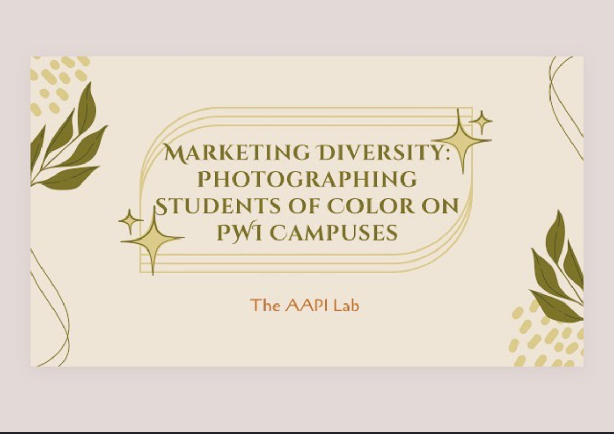
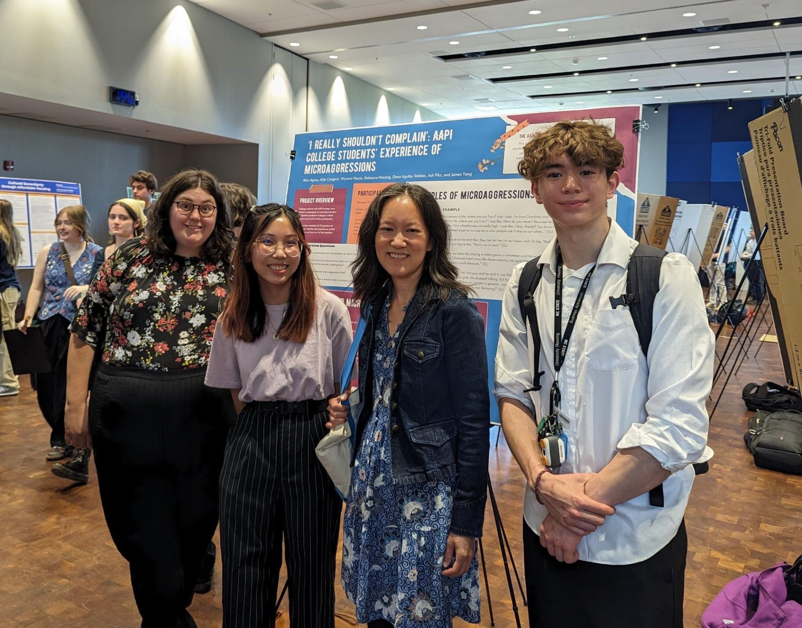

An end-to-end dual-branch Transformer fusion framework for anticancer drug response prediction. It pairs modality-specific multi-omics cell-line encoders with a GNN-Transformer drug branch, and provides biologically grounded explanations through SHAP-based gene attributions and pathway enrichment. Read on arXiv →

Marketing Diversity: Photographing Students of Color on PWI Campuses
Conducted a visual analysis of university marketing materials to examine how students of color are portrayed in recruitment content. Completed CITI Social & Behavioral Research certification to uphold ethical standards in handling sensitive information.

“I Really Shouldn't Complain”: AAPI College Students' Experience of Microaggressions
Investigated how Asian American and Pacific Islander (AAPI) students perceive and respond to microaggressions in higher education settings, using qualitative interview data.